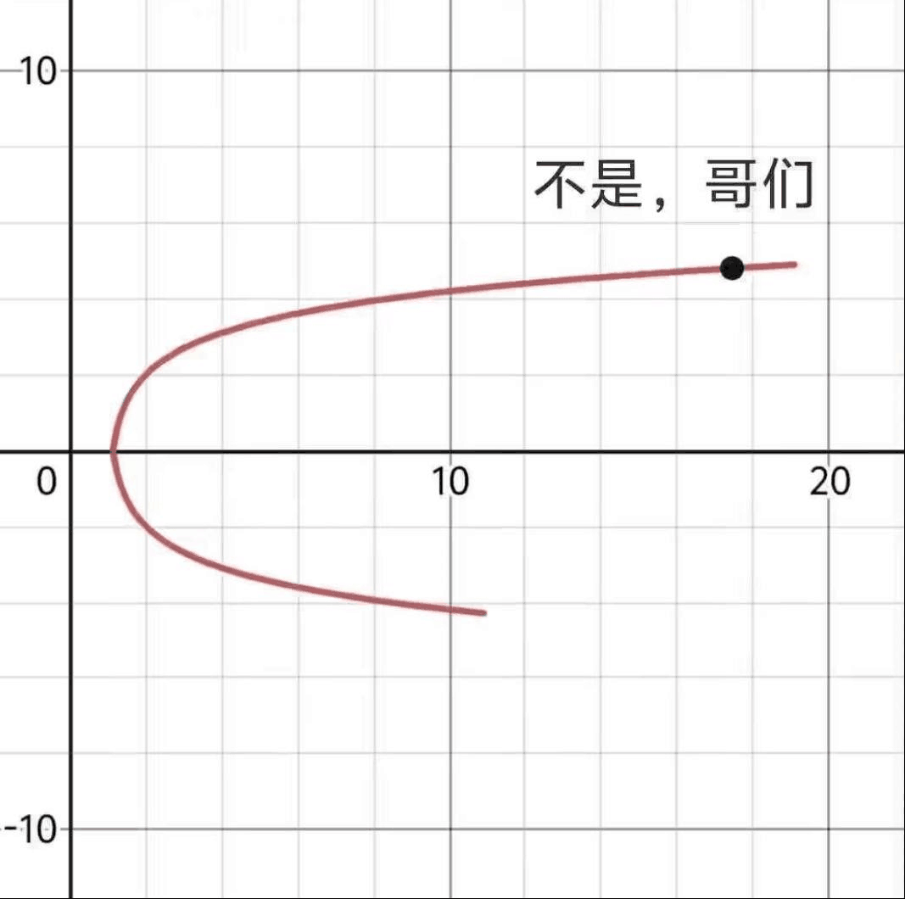

<!DOCTYPE html>
<html lang="en">
<head>
    <meta charset="UTF-8">
    <title>V-Html</title>
    <!-- v-html，用于 <动态的解析标签> 并返还到 原始的网页文档流中 -->
</head>
<body>
    <script src="https://cdn.jsdelivr.net/npm/vue@2.7.16/dist/vue.js"></script>
    <div id="app">
        <div v-html="msg"></div> <!-- 这里就是要被v-html(innerHtml)"填充内容"的地方 -->
        <!-- 而"填充"的内容，正是后面="msg"的值，被"自动写入"到<div>内部 -->


        <div v-html="image"></div>
    </div>
    <script>
        const app=new Vue({
            el:"#app",
            data:{
                msg: `<a href="https://www.bing.com">点我发Bing</a>`, //加标签用反号(、)
                //同理，我们来塞一张图片
                image: ``
            }
        })
    </script>

</body>
</html>